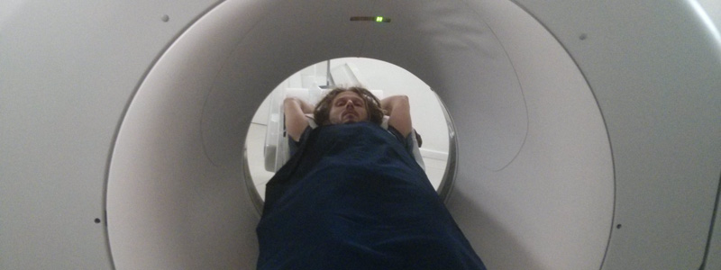

An unexpected change of plan

After over a year on the road we arrived in Brazil ready to slow down our travelling wheels. And we did - but not as planned - with ultrasounds, an epidural, surgery and even pregnancy tests culminating with a drastic change to our Brazilian dream.
We entered Brazil via the triple frontier, where it borders Colombia and Peru in the Amazon basin. We were boarding a boat for the four day trip down the river to Manaus when I noticed a swelling on my right testicle. There was nothing that could be done about it immediately and I hoped it would sort itself out during the boat journey.
The trip down the Amazon was lovely and very relaxed. Our hammocks were hung up on the middle deck along with the 50 or so other passengers and there was a top deck for enjoying the sunshine and a beer. Moving constantly downstream for four days really helped to appreciate the epic scale of this river - parts of it were so wide you could barely see both edges while at other times - when we took flooded short-cuts avoiding one of the river's long meanders - it was as narrow as the Thames in London.
We had a flight booked onwards from Manaus to Belém the day after we docked, so it was another day before I was able to go and see a doctor. Upon arrival in Belém we searched Google for a Urologist and picked the closest one to our hostel - Dr Oscar turned out to be a great choice. Even with a full diary he managed to fit me in that morning and by the afternoon I was getting an ultrasound done.
The ultrasound revealed a large mass on my right testicle. The doctor couldn't give a definite diagnosis from the information so far but the first thing to do was to take a course of antibiotics and anti-inflamatories and see what effect they had. We arranged to return five days later after the drugs had had a chance to do their jobs.
And so started the hanging around with not much to do. Belém isn't the most interesting city in Brazil and was just meant to be an overnight stop before we moved on to explore the rest of the northern coast. The Lonely Planet says it's the kind of town that grows on you over time but after spending three weeks there I'm not sure I can agree. It does have decent doctors, laboratories and hospitals though, which is what we needed at the time.
When we went back to the doctor nothing much had changed. Another ultrasound showed things were pretty much identical inside me and the probable diagnosis shifted to testicular cancer.
The next step would be a Inguinal Orchiectomy so that they could remove the lump and look at it under a microscope to see exactly what it was. The surgery was scheduled for five days later with various x-rays and blood tests filling the time in between. With my travel insurance dragging their heels and generally being as useless as possible this was then put back by a further day.
One of the blood tests revealed elevated levels of Beta HCG in my blood stream. This is the hormone which is used to test for pregnancies in women but is also a "marker" for testicular cancer in men (along with LDH and AFP). At this point it became more or less certain that I was one of the 2,200 men who are diagnosed with testicular cancer in the UK each year. It was also the point of my life when I would have been able to wee on a pregnancy test and turn it blue!
The day of the operation came and we went to the hospital. I'm sure being operated on is never easy but being in a foreign country and not being able to communicate with the surgeon or nurses makes it even more stressful. Luckily P was on hand to be my translator and they gave her a lovely green uniform and let her come into the operating theatre with me and stay throughout the operation.
They set me up with a drip and explained that they would give me the epidural so that I wouldn't feel anything. We'd discussed this previously with the surgeon and I was quite clear that I'd need sedatives as well - I didn't want to be concious while I was cut open, whether or not I could feel anything. Luckily the anaesthetist got my message and mixed something into my drip and soon I was in my own world...
The operation was over in about 30 minutes and everything went smoothly. Every time I came to during it, P was able to keep me calm and send me back to sleep. Once it was over I was wheeled back to my room and P was given a plastic bag containing the stuff-that-had-been-cut-out-of-me to take to a lab a few blocks away.
Back in the hospital room I did a pretty good job of giving the impression that I was awake and back to normal. It wasn't until hours later that P realised I kept forgetting what had happened and asking the same questions - I was still a bit wasted on my sedatives.
After a night at the hospital I was sent back to the hostel for a weeks rest, recovery time and further waiting! Four days later I did some more blood tests - these showed that the marker levels had dropped - Beta HCG was just above "normal range" and LDH was back down into normal range. This was good news as it indicates that hopefully the tumour that was removed was the extent of the cancer in my body.
Two days later we saw the doctor who explained to us the contents of the pathology report. The tumour that was removed was malignant. It was 60% embryonal carcinoma and 40% classic seminoma which means it is classified as a non-seminoma tumour. There was no evidence of spread outside of the testicle but there was evidence of vascular / lymphatic invasion within it.
I was sent for a CT scan that same day which let the doctors take a close look inside my abdomen and lungs to see if there was any evidence of metastasis (secondary tumours in other parts of my body). This also came back all clear.
The next day (one week after the operation) it was time for more blood tests. By now my Beta HCG levels had fallen to within a normal range which is great news. The AFP levels had also fallen and were just above the normal range - hopefully they continued to fall since then and are by now within the range.
With these results the doctor was now in a position to give me the "staging" information about my cancer. This is a system that is used internationally so that doctors and scientists can talk about the seriousness of different cases of testicular cancer. It's a fairly complex system but in my case it breaks down like this: pT2, N0, M0, S1/0.
All these combine into an overall stage for the cancer which in my case is 1B (and assuming that the AFP levels continued to drop). This basically means that there is no evidence that the cancer spread beyond the now removed tumour. However, there are some aspects which signal an elevation of risk:
- The type of cancer - embryonal carcinoma is considered more likely to spread.
- The vascular / lymphatic invasion within the cancerous testicle.
This means that even though there is no current evidence of spreading, there is a risk that this might still happen in the near future, so the next step is to come back to the UK and see a specialist there. Depending on their advice there will be one of three options:
- Surveillance - Nothing further is done but I have monthly check-ups where my blood is tested for the cancer markers and CT scans or similar are done to look for evidence of spread.
- Chemotherapy - I take a short course of chemotherapy to make sure any cancer that did spread into the rest of my body is destroyed. This is pretty safe but definitely isn't without side effects.
- Further surgery - They take out all of the lymph nodes in my abdomen. This involves removing all of the things that the cancer is most likely to have spread to. It does lessen the chances of the cancer coming back but in over 70% of cases it is unnecessary and involves a more serious operation and a week in hospital.
Obviously it will depend on the opinion of the specialist in the UK but at this stage I'm definitely hoping for the first option! I'm feeling completely fine and the scar from the surgery is healing nicely. All of the tests done since the surgery are showing favourable results. I was definitely lucky to be able to get the surgery organised and done so quickly - hopefully we caught it before it spread.
So we will be heading back home to the UK where I have already spoken to my GP to organise a referral to a specialist. We will get to enjoy our last bit of time in Brazil and then will fly back home to London in time for the appointment in early July.
This doesn't mean we are putting a full stop on this trip though! There is some tripping around Europe we'd like to do this summer and who knows - maybe we'll even make it back out here to finish the South American leg of our journey.
Coming home also doesn't mean the end for this blog - in fact far from it. We have a massive backlog of stuff to post and hopefully in the UK we'll have the time and the internet speed to catch up so do follow us to see where we've been and what we've been up to!
We are gutted to be leaving Brazil before we've even got started - especially since it was one of the main destinations of our trip - and while the world cup is on too! But it's actually quite exciting to think about being back in London. Fourteen months is a long time to have been on the road and of course we miss all of our friends and family back there immensely. Plus we've already started dreaming about all the different foods we're going to eat when we get back - who's up for a kebab at Cirrik soon?
Comments